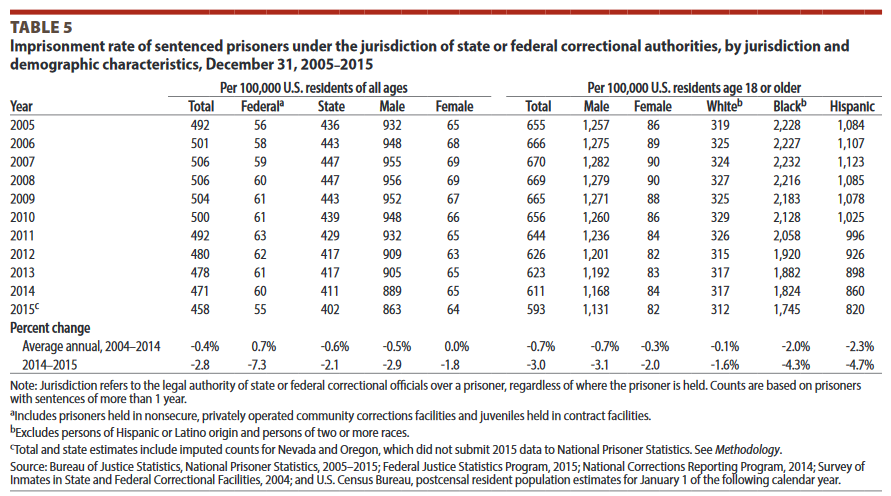

There has always been controversy in America over police force and brutality. Police are given more power than civilians, and should be held at a higher standard because of this. On the other hand, police are put into much more dangerous situations than most civilians, so using their power may be justified. Determining if guns, tasers, weapons, ect.. were used apropriately, after the fact, is very difficult. Personally I am hopeful for police body cams, to help remove some of the unknowns about police encounters. When talking about police, police violence, and crime, in the United States, it is almost certain race will be brought up. It's a statistical fact that Black americans are disproportionatly arrested, charged, and killed in police encounters. Here is a table of the imprisonment rate per 100,000 citizens who fit into the category. This will give us a percentage of the given group, so the total population doesn't skew the data.
[1]These sorts of statistics should be common knowledge, I wont fill this blog with more supporting statistics, they are very easy to find if you are curious.
To put it simply, it is an activist movement trying raise awareness to the systematic racisms of the United States criminal justice system. There is a trend of Black people being treated worse by poliece officers, and those police officers not being punished for their racism.
In 2013, three women (Alicia Garza, Patrisse Cullors, and Opal Tometi) started the hashtag #BlackLivesMatter in response to the aquittal of George Zimmerman, who shot and killed Trayvon Martin. From there, the hashtag was used to raise awareness of several deaths of Black americans caused by police. Along with this, a majority of those responsible for these deaths, were often aquitted or given an unacceptably light sentence.[2]
It feels unfair to pick out specific examples of police violence against Black americans, but to give an idea of why so many people are outraged, it is necessary.
Alton Sterling was shot by police officers on July 5, 2016. The call was that a man was threatening and waving a handgun. The police arrived, tased Sterling, had two officers pin him to the ground, and then shot him six times.[3]
Philando Castile was shot by a police officer on July 6, 2016. He was pulled over as part of a traffic stop, with his girlfriend and her four year old daughter. He notifies the police officer that he has a conciled weapon and permit to carry one. He was shot seven times.[4]
Youtube channel ViHart does a very good job summarizing and explaining #BlackLivesMatter, and I would very much recommend viewing her video here. A more comprehensive list of important shootings, protests and events can be found here.
There are two main contentions with #BlackLivesMatter, first being that focusing on Black lives instead of All lives ignores a large group of people who are victims of police violence. The second contention is that the supporters are ignoring the violence and danger that police officers face. Each of these has started a hashtag, but neither has gained much attention as their own cause.
#AllLivesMatter is a tag for a group of supporters who feel that focusing on Black victims of police violence is ignoring victims who aren't Black. There is often conflict between this group and #BlackLivesMatter. Whether or not focusing on Black lives is helpful to other races, or is even racist, is the main point of argument.[5]
#BlueLivesMatter is a tag for a group of supporters of police officers. Their goal is to raise awareness of police who have been killed, and the dangers police face. The conflict here is whether or not supporting police officers and bringing attention to those who were killed, supports the institutional racism that is in our police system.[6]